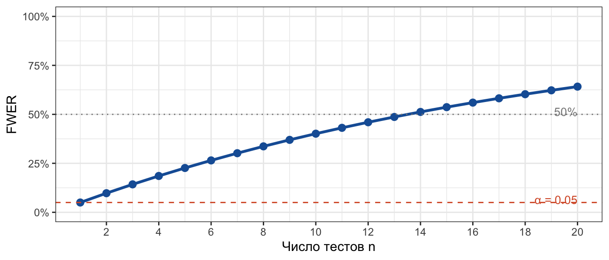
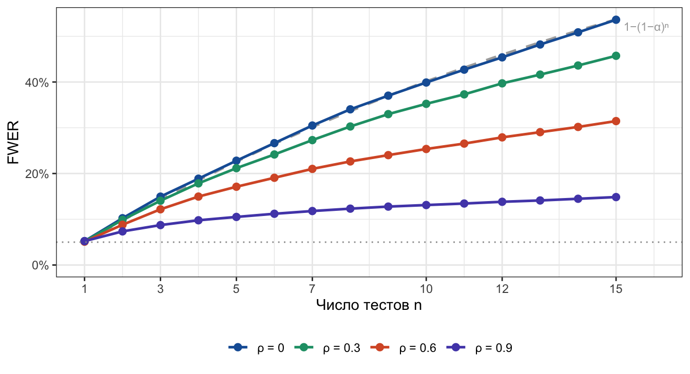
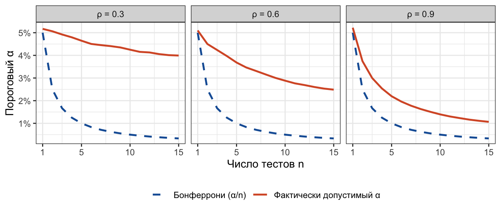

R-код
library(tidyverse)В продуктовой аналитике редко тестируют что-то одно. Обычно в одном A/B-тесте смотрят на 5–10 метрик сразу, или сравнивают несколько вариантов с контролем. Каждый тест формально проводится на уровне \(\alpha\). Но что происходит с вероятностью хотя бы одной ложной находки — FWER (Family-Wise Error Rate)?
Если проводить \(n\) независимых тестов, каждый на уровне \(\alpha\), вероятность хотя бы одного ложного отклонения:
\[ \text{FWER} = 1 - (1-\alpha)^n \]
library(tidyverse)tibble(n = 1:20, fwer = 1 - (1 - 0.05)^n) |>
ggplot(aes(x = n, y = fwer)) +
geom_line(colour = "#185FA5", linewidth = 1.1) +
geom_point(colour = "#185FA5", size = 2.5) +
geom_hline(yintercept = 0.05, linetype = "dashed", colour = "#D85A30") +
geom_hline(yintercept = 0.50, linetype = "dotted", colour = "#888888") +
annotate("text", x = 20, y = 0.065, hjust = 1, size = 3.4,
colour = "#D85A30", label = "α = 0.05") +
annotate("text", x = 20, y = 0.515, hjust = 1, size = 3.4,
colour = "#888888", label = "50%") +
scale_y_continuous(labels = scales::percent, limits = c(0, 1)) +
scale_x_continuous(breaks = seq(2, 20, 2)) +
labs(x = "Число тестов n", y = "FWER") +
theme_bw()
При \(n = 14\) тестах FWER уже превышает 50%. Именно это обосновывает поправку Бонферрони: контролируем FWER, снижая порог для каждого теста до \(\alpha/n\).
Формула \(1-(1-\alpha)^n\) выведена в предположении независимости. Но в реальных экспериментах тесты почти всегда скоррелированы:
Для любых положительно зависимых тестов (MTP / positive regression dependence) справедливо неравенство Буля:
\[ \text{FWER} \;\leq\; 1 - (1-\alpha)^n \]
Формула — верхняя граница, а не точное значение. Фактический FWER ниже, иногда — существенно. Бонферрони при этом оказывается консервативным.
Будем моделировать равнокоррелированные тест-статистики через общий фактор:
\[ Z_i = \sqrt{\rho}\,W + \sqrt{1-\rho}\;\varepsilon_i, \quad i = 1,\ldots,n, \quad W,\,\varepsilon_i \overset{\text{iid}}{\sim} \mathcal{N}(0,1) \]
Тогда \(\text{Corr}(Z_i, Z_j) = \rho\) для всех \(i \neq j\).
Слайдеры задают параметры; «▶ Запустить» считает FWER методом Монте-Карло для каждого \(n\) от 1 до заданного максимума.
viewof alpha = Inputs.select(
[0.05, 0.01, 0.10],
{ label: "Уровень значимости α", value: 0.05 }
)
viewof rho = Inputs.range(
[0, 0.95],
{ label: "Корреляция ρ", value: 0.50, step: 0.05,
format: x => x.toFixed(2) }
)
viewof max_n = Inputs.range(
[5, 20],
{ label: "Макс. число тестов", value: 15, step: 1 }
)
viewof n_sims_inp = Inputs.select(
[1000, 3000, 5000],
{ label: "Симуляций на точку", value: 3000 }
)
viewof run_btn = Inputs.button("▶ Запустить симуляцию")sim_data = {
run_btn // пересчёт при нажатии кнопки
const rows = []
for (let n = 1; n <= max_n; n++) {
rows.push({
n,
sim: sim_fwer(n, alpha, rho, n_sims_inp),
theory: 1 - Math.pow(1 - alpha, n)
})
}
return rows
}{
const maxY = Math.min(1, sim_data[sim_data.length - 1].theory + 0.06)
const chart = Plot.plot({
marks: [
Plot.areaY(sim_data, {
x: "n", y1: "sim", y2: "theory",
fill: "#D85A30", fillOpacity: 0.10
}),
Plot.line(sim_data, {
x: "n", y: "theory",
stroke: "#888888", strokeWidth: 1.8, strokeDasharray: "5,3"
}),
Plot.line(sim_data, {
x: "n", y: "sim",
stroke: "#D85A30", strokeWidth: 2.2
}),
Plot.dot(sim_data, {
x: "n", y: "sim",
fill: "#D85A30", r: 3.5, title: d =>
`n=${d.n}\nСимуляция: ${(d.sim*100).toFixed(1)}%\nТеория: ${(d.theory*100).toFixed(1)}%`
}),
Plot.ruleY([alpha], {
stroke: "#185FA5", strokeWidth: 1.5, strokeDasharray: "5,3"
})
],
x: {
label: "Число одновременных тестов (n)",
tickFormat: d => d,
ticks: Math.min(max_n, 10)
},
y: {
label: "FWER",
domain: [0, maxY],
tickFormat: d => (d * 100).toFixed(0) + "%",
grid: true
},
height: 300,
marginLeft: 55,
marginRight: 20
})
// Легенда
const legend = html`<div style="
display:flex; gap:20px; font-size:12px; color:#666;
margin-top:6px; flex-wrap:wrap">
<span style="display:flex;align-items:center;gap:6px">
<svg width="24" height="12"><line x1="0" y1="6" x2="24" y2="6"
stroke="#888" stroke-width="1.8" stroke-dasharray="5,3"/></svg>
1−(1−α)ⁿ (теория, ρ=0)
</span>
<span style="display:flex;align-items:center;gap:6px">
<svg width="24" height="12"><line x1="0" y1="6" x2="24" y2="6"
stroke="#D85A30" stroke-width="2.2"/></svg>
Симуляция (ρ=${rho.toFixed(2)})
</span>
<span style="display:flex;align-items:center;gap:6px">
<svg width="24" height="12"><line x1="0" y1="6" x2="24" y2="6"
stroke="#185FA5" stroke-width="1.5" stroke-dasharray="5,3"/></svg>
α = ${alpha} (один тест)
</span>
</div>`
return html`<div>${chart}${legend}</div>`
}{
const keys = [1, 3, 5, 10].filter(k => k <= max_n)
if (!keys.includes(max_n)) keys.push(max_n)
const rows = sim_data.filter(d => keys.includes(d.n))
const fmt = v => (v * 100).toFixed(1) + "%"
const gap = (th, si) => {
const d = (th - si) * 100
return d > 0.2
? `<span style="color:#1D9E75">−${d.toFixed(1)} п.п.</span>`
: `<span style="color:#888">≈ 0</span>`
}
return html`
<table style="font-size:13px;border-collapse:collapse;width:100%;margin:.5rem 0">
<thead>
<tr style="border-bottom:1.5px solid #ddd">
<th style="text-align:left;padding:6px 8px;font-weight:500">n</th>
<th style="text-align:right;padding:6px 8px;font-weight:500">
Теория 1−(1−α)ⁿ</th>
<th style="text-align:right;padding:6px 8px;font-weight:500;color:#D85A30">
Симуляция (ρ=${rho.toFixed(2)})</th>
<th style="text-align:right;padding:6px 8px;font-weight:500">
Экономия α</th>
</tr>
</thead>
<tbody>
${rows.map(d => `
<tr style="border-bottom:0.5px solid #eee">
<td style="padding:5px 8px">${d.n}</td>
<td style="text-align:right;padding:5px 8px">${fmt(d.theory)}</td>
<td style="text-align:right;padding:5px 8px;color:#D85A30">
${fmt(d.sim)}</td>
<td style="text-align:right;padding:5px 8px">
${gap(d.theory, d.sim)}</td>
</tr>`).join("")}
</tbody>
</table>
<p style="font-size:11px;color:#888;margin:.25rem 0 0">
«Экономия α» — насколько фактический FWER ниже теоретической границы
при корреляции ρ=${rho.toFixed(2)}.
</p>`
}Воспроизведём симуляцию и покажем полную картину для нескольких \(\rho\).
# Векторизованная симуляция FWER
# W (общий фактор) и eps (специфические) генерируются один раз для всех ρ.
simulate_fwer <- function(n_tests, rhos, alpha = 0.05, n_sims = 10000, seed = 42) {
set.seed(seed)
z_crit <- qnorm(1 - alpha / 2)
W <- rnorm(n_sims) # общий фактор
eps <- matrix(rnorm(n_sims * n_tests), nrow = n_sims) # специфический шум
# для каждого ρ одни и те же реализации — только смешивание меняется
sapply(rhos, function(rho) {
Z <- sqrt(rho) * W + sqrt(1 - rho) * eps # n_sims × n_tests
mean(apply(abs(Z) > z_crit, 1, any)) # доля ложных отклонений
})
}rho_vals <- c(0, 0.30, 0.60, 0.90)
results <- map_dfr(1:15, \(n) {
fwers <- simulate_fwer(n_tests = n, rhos = rho_vals, n_sims = 10000)
tibble(n = n, rho = rho_vals, fwer_sim = fwers)
}) |>
mutate(
fwer_theory = 1 - (1 - 0.05)^n,
rho_label = paste0("ρ = ", rho)
)theory_line <- tibble(n = 1:15, fwer = 1 - (1 - 0.05)^n)
ggplot(results, aes(x = n, y = fwer_sim, colour = rho_label, group = rho_label)) +
geom_line(
data = theory_line, aes(x = n, y = fwer),
inherit.aes = FALSE,
colour = "#aaaaaa", linetype = "dashed", linewidth = 0.9
) +
annotate("text", x = 15.2, y = 1 - (1 - 0.05)^15 - 0.015,
label = "1−(1−α)ⁿ", hjust = 0, size = 3, colour = "#aaaaaa") +
geom_line(linewidth = 0.9) +
geom_point(size = 2.2) +
geom_hline(yintercept = 0.05, linetype = "dotted", colour = "grey60") +
scale_colour_manual(
values = c("ρ = 0" = "#185FA5",
"ρ = 0.3" = "#1D9E75",
"ρ = 0.6" = "#D85A30",
"ρ = 0.9" = "#534AB7")
) +
scale_y_continuous(labels = scales::percent, limits = c(0, NA)) +
scale_x_continuous(breaks = c(1, 3, 5, 7, 10, 12, 15)) +
labs(x = "Число тестов n", y = "FWER", colour = NULL) +
coord_cartesian(xlim = c(1, 16)) +
theme_bw() +
theme(legend.position = "bottom")
Заметьте: при \(\rho = 0\) симуляция лежит прямо на теоретической кривой (валидация метода), а при \(\rho = 0.9\) FWER почти не отличается от \(\alpha\) даже при \(n = 15\).
Поправка Бонферрони задаёт \(\alpha_{\text{adj}} = \alpha / n\) — это напрямую следует из неравенства Буля:
\[ P\!\left(\bigcup_{i=1}^n A_i\right) \leq \sum_{i=1}^n P(A_i) = n \cdot \alpha_{\text{adj}} \]
Неравенство работает при любой структуре зависимостей — поэтому Бонферрони гарантирует контроль FWER всегда. Но для коррелированных тестов он платит лишним снижением мощности.
results |>
filter(rho %in% c(0.30, 0.60, 0.90)) |>
mutate(
alpha_bonf = 0.05 / n, # Бонферрони
alpha_needed = 1 - (1 - fwer_sim)^(1/n) # «честный» α для той же FWER
) |>
select(n, rho_label, alpha_bonf, alpha_needed) |>
pivot_longer(starts_with("alpha"), names_to = "type", values_to = "a") |>
mutate(
type = recode(type,
"alpha_bonf" = "Бонферрони (α/n)",
"alpha_needed" = "Фактически допустимый α")
) |>
ggplot(aes(x = n, y = a, colour = type, linetype = type)) +
geom_line(linewidth = 0.9) +
facet_wrap(~rho_label) +
scale_y_continuous(labels = scales::percent) +
scale_x_continuous(breaks = c(1, 5, 10, 15)) +
scale_colour_manual(values = c("Бонферрони (α/n)" = "#185FA5",
"Фактически допустимый α" = "#D85A30")) +
scale_linetype_manual(values = c("Бонферрони (α/n)" = "dashed",
"Фактически допустимый α" = "solid")) +
labs(x = "Число тестов n", y = "Пороговый α", colour = NULL, linetype = NULL) +
theme_bw() +
theme(legend.position = "bottom")
Бонферрони корректен, но консервативен. При скоррелированных метриках реальный FWER ниже, чем обещает формула, поэтому поправка «штрафует» сильнее, чем нужно, снижая мощность.
Степень консерватизма зависит от ρ. Если метрики слабо коррелируют (\(\rho < 0.3\)), поправка почти точная. При \(\rho > 0.6\) можно использовать Šidák или permutation-based методы.
Для FDR вместо FWER — метод Бенджамини–Хохберга (BH). BH контролирует долю ложных открытий среди всех отклонённых гипотез и для положительно зависимых тестов (PRDS) строго валиден — при этом мощнее Бонферрони.
Правило большого пальца. Считайте число независимых «вопросов», а не просто число тестов. Revenue, orders, AOV — это три метрики, но один экономический вопрос; поправка на три менее оправдана, чем поправка на все пятнадцать метрик дашборда.